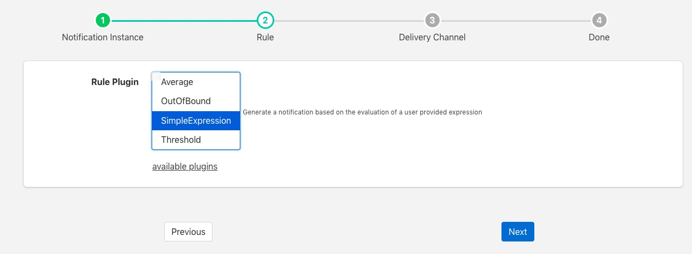

Expression Rule¶
The foglamp-rule-simple-expression is a notification rule plugin that evaluates a user defined function to determine if a notification has triggered or not. The rule will work with a single asset, but does allow access to all the data points within the asset.
During the configuration of a notification use the screen presented to choose the average plugin as the rule.
|  |
The next screen you are presented with provides the configuration options for the rule.
 |
The Asset entry field is used to define the single asset that the plugin should monitor.
The Expression to apply defines the expression that will be evaluated each time the rule is checked. This should be a boolean expression that returns true when the rule is considered to have triggered. Each data point within the asset will become a symbol in the expression, therefore if your asset contains a data point called voltage, the symbol voltage can be used in the expression to obtain the current voltage reading. As an example to create an under voltage notification if the voltage falls below 48 volts, the expression to use would be;
voltage < 48
The trigger expression uses the same expression mechanism, ExprTk as the foglamp-south-expression, foglamp-filter-expression and foglamp-filter-threshold plugins
Expression may contain any of the following…
- Mathematical operators (+, -, *, /, %, ^)
- Functions (min, max, avg, sum, abs, ceil, floor, round, roundn, exp, log, log10, logn, pow, root, sqrt, clamp, inrange, swap)
- Trigonometry (sin, cos, tan, acos, asin, atan, atan2, cosh, cot, csc, sec, sinh, tanh, d2r, r2d, d2g, g2d, hyp)
- Equalities & Inequalities (=, ==, <>, !=, <, <=, >, >=)
- Logical operators (and, nand, nor, not, or, xor, xnor, mand, mor)